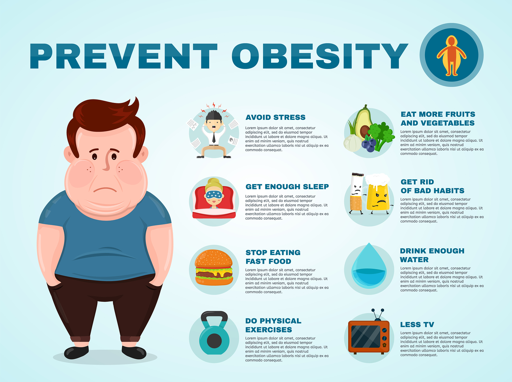
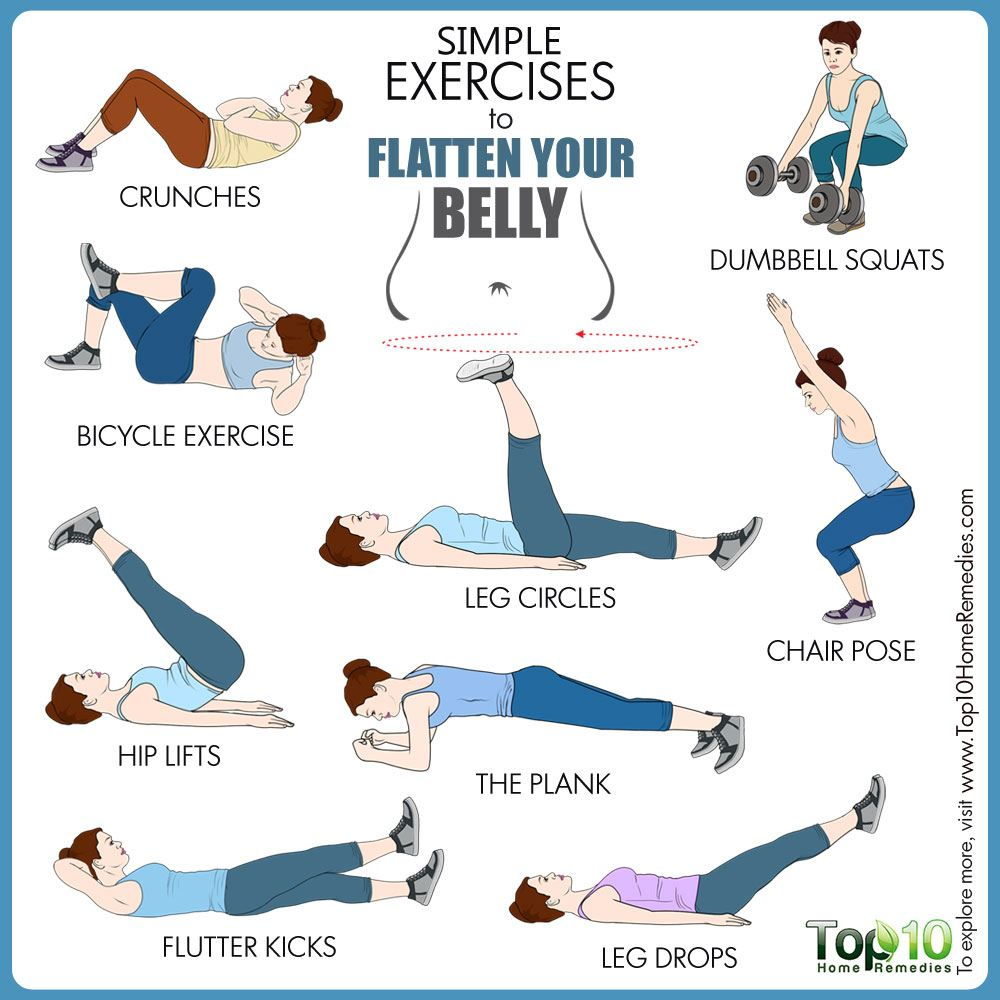

The usual treatments for overweight individuals is diet and physical exercise.
Being overweight or fat is having more body fat than is optimally healthy. Being overweight is especially common where food supplies are plentiful and lifestyles are sedentary. As of 2003, excess weight reached epidemic proportions globally, with more than 1 billion adults being either overweight or obese.[1] In 2013, this increased to more than 2 billion.[2] Increases have been observed across all age groups. A healthy body requires a minimum amount of fat for proper functioning of the hormonal, reproductive, and immune systems, as thermal insulation, as shock absorption for sensitive areas, and as energy for future use; however, the accumulation of too much storage fat can impair movement, flexibility, and alter the appearance of the body.
While some negative health outcomes associated with obesity are accepted within the medical community, the health implications of the overweight category are more controversial. A 2016 review estimated that the risk of death increases by seven percent among overweight people with a BMI of 25 to 27.5 and 20 percent among overweight people with a BMI of 27.5 to 30.[11] Katherine Flegal et al., however, found that the mortality rate for individuals who are classified as overweight (BMI 25 to 29.9) may actually be lower than for those with an "ideal" weight (BMI 18.5 to 24.9), noting that many studies show that the lowest mortality rate is at a BMI close to 25.[12][13] The specific conclusions appear to depend on what other factors are controlled for,[11] and Flegal has accordingly alleged that the findings from the 2016 review are driven by bias toward preconceived opinions.[14] Being overweight has been identified as a risk factor for cancer, and Walter Willett predicts that being overweight will overtake smoking as the primary cause of cancer in developed countries as cases of smoking-related cancer dwindle.[15] Being overweight also increases the risk of oligospermia and azoospermia in men.[16] Psychological well-being is also at risk in the overweight individual due to social discrimination. Being overweight has been shown not to increase mortality[qualify evidence] in older people: in a study of 70 to 75-year old Australians, mortality was lowest for "overweight" individuals (BMI 25 to 29.9),[17] while a study of Koreans found that, among those initially aged 65 or more, an increase in BMI to above 25 was not associated with increased risk of death.[18]
Physical activity is generally a positive choice for everyone, and it can offer specific benefits for those who are considered overweight. Carrying excess weight sometimes puts you at higher risk for certain diseases, including high blood pressure, heart disease, diabetes, sleep apnea, and depression.1 A program of moderate exercise can help you to reduce your potential risk of disease. Weight loss, which may happen as a result of exercise, can also help to reduce your risk for disease. But more importantly, exercise can improve the way your body functions throughout the day. If your body feels better as you move through daily activities, your mood and your confidence level are likely to get a boost as well. For these reasons, a lot of people who exercise consistently learn to love exercise.
Dietitians generally recommend eating several balanced meals dispersed through the day, with a combination of progressive, primarily aerobic, physical
exercise. In fact, some research found benefits from physical activity, diet and behaviour changes on BMI in children from 12 to 17 years old.
Considering that most of the treatment strategies are directed to change lifestyle-related behaviours of individuals (namely in dietary and physical activity),
the transtheoretical model has been used as a framework to design weight management interventions. A systematic review assessed the
effectiveness of dietary and physical activity interventions based on the TTM in producing sustainable (one year or longer) weight loss in overweight and
obese adults. The included studies did not allow to produce conclusive evidence about the impact of the use of this model combined with these
interventions on sustainable weight loss. Nevertheless, very low quality scientific evidence suggests that this approach may lead to improvements in
physical activity and dietary habits, namely increased in both exercise duration and frequency, and fruits and vegetables consumption, along with reduced
dietary fat intake.